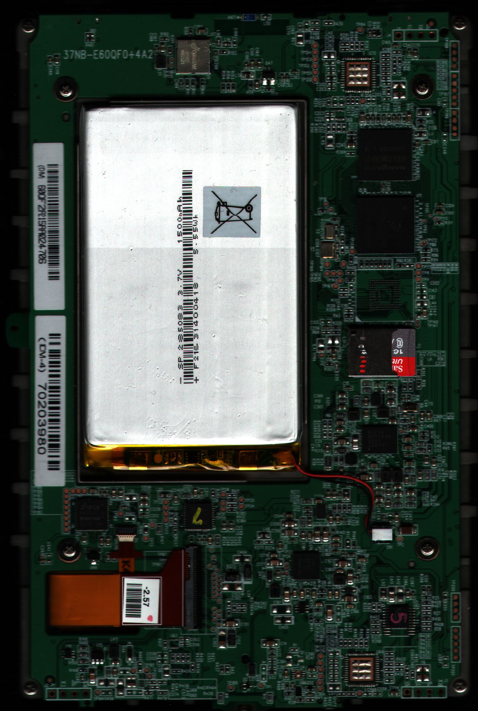

Tolino Shine 2HD (tolino-shine2hd)
|
 Insides | |
| Manufacturer | Kobo |
|---|---|
| Name | Tolino Shine 2HD |
| Codename | tolino-shine2hd |
| Released | 2015 |
| Category | testing |
| Original software | Tolino firmware based on Android 4.0 |
| Hardware | |
| Chipset | Freescale i.MX6 SoloLite |
| CPU | 1x 1 GHz Cortex-A9 |
| GPU | PXP + EPDC + Vivante |
| Display | 1448x1072 6 inch e-paper |
| Storage | Internal µSD slot with 8GB |
| Memory | 512 MB |
| Architecture | armv7 |
{kind=link}
| USB Networking |
Works
|
|---|---|
| Flashing | |
| Touchscreen |
Works
|
| Display |
Works
|
| WiFi |
Works
|
| FDE | |
| Mainline |
Works
|
| Battery |
Works
|
| 3D Acceleration |
Unavailable
|
| Audio |
Unavailable
|
| Bluetooth |
Unavailable
|
| Camera |
Unavailable
|
| GPS |
Unavailable
|
| Mobile data |
Unavailable
|
| SMS |
Unavailable
|
| Calls |
Unavailable
|
| USB OTG |
Works
|
| NFC | |
| Accelerometer |
Unavailable
|
|---|---|
| Magnetometer | |
| Ambient Light | |
| Proximity | |
| Hall Effect | |
| Barometer | |
| Power Sensor | |
| Camera Flash | |
|---|---|
| Keyboard | |
| Touchpad | |
| USB-A | |
| HDMI/DP | |
| Ir TX | |
| Ir RX | |
| Stylus | |
| Haptics | |
| Ethernet | |
| FOSS bootloader |
Works
|
Contributors
- Andi
Users owning this device
Hardware
Wireless
Board revision 37NB-E60QF0+4A3 contains the Realtek RTL8189FTV, a 802.11bgn 2.4G single-chip solution. Using the mainline kernel this is supported by the RTL8189fs branch of this repo. Note this prints a lot of information to dmesg (prefixed with 'RTL871X'). Board revision 37NB-E60QF0+4A2 contains the CyberTan WC121 (BCM43362) SDIO WiFi supported by the brcmfmac mainline driver. That driver has a separate firmware and config file which are included in linux-firmware-brcm-20230117
UART
UART (3.3V) is available on J4. This is located near the edge of the PCB on the top right (with the USB at bottom). The default baudrate is 115200 (8N1). There is a second UART next to it (TP198). The other uart-like pin-combinations are connected to other chips, e.g. the MSP430 µC
Installing software
Replacing internal µSD
Internal µSD card can be replaced by something bigger. Favourite way to install software is to clone the SD card and keep the old one as backup or have at least the hidden waveform partition in place. before doing pmbootstrap install
So basically pull out µSD and connect to your PC and do:
dd if=/dev/sdX of=tolino2-backup.img
replace with something bigger (in reality only the waveform is needed but for simplicity) and do:
dd if=tolino2-backup.img of=/dev/sdX
and then use that sdcard with pmbootstrap install --sdcard
Fastboot
Holding the frontlight button while powering on will give you a short time of fastboot availability on the vendor u-boot. Note: if kernels are booted this way, dtb must be appended and deep sleep will not properly wake up.
Gallery
Tolino Shine 2HD displaying its own wiki page
{kind=link}
See also
Sources
- Vendor U-boot and kernel source
- Upstream Devicetree Source (dts)
- branches kobo/drm-merged-5.X Patched mainline kernels (includes EPD), currently kobo/drm-merged-5.17
- branch kobo-2020-10 more recent u-boot behaving more normal, see corresponding wiki for details
- Wi-Fi driver, branch rtl8189fs
- pmaports!2797 Initial merge request